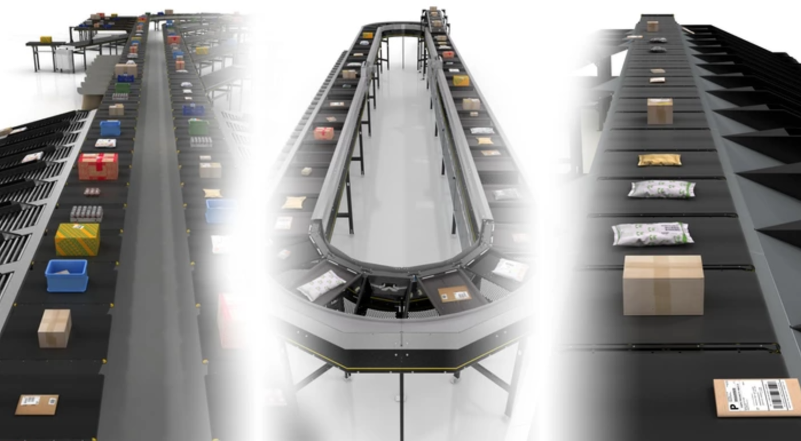
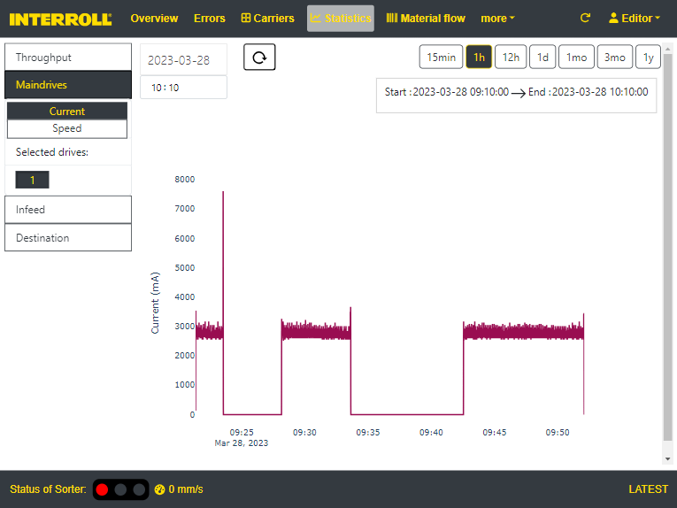
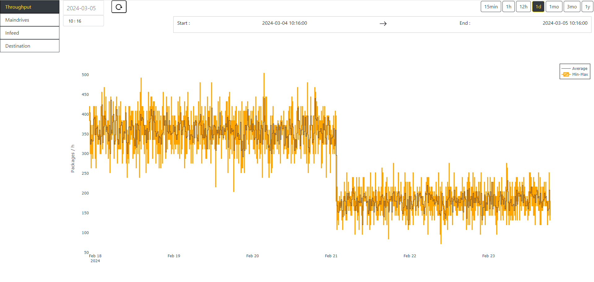
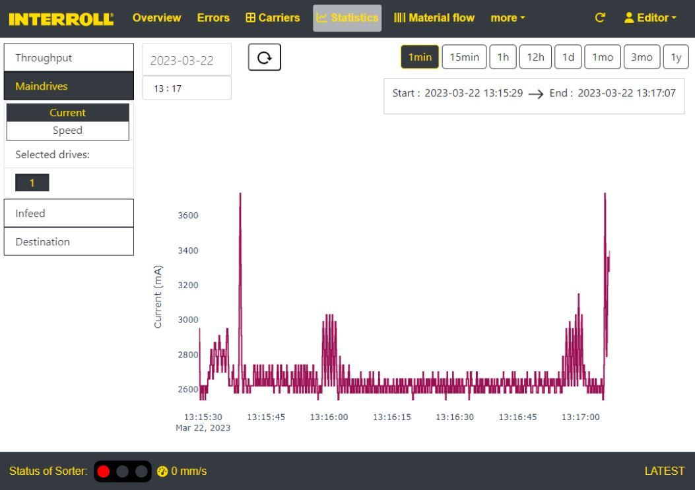
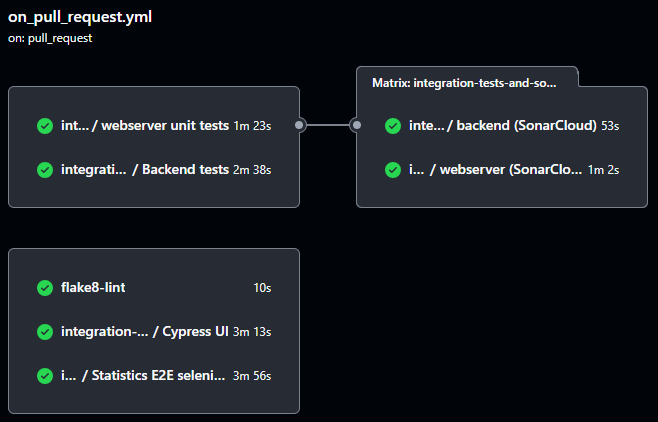
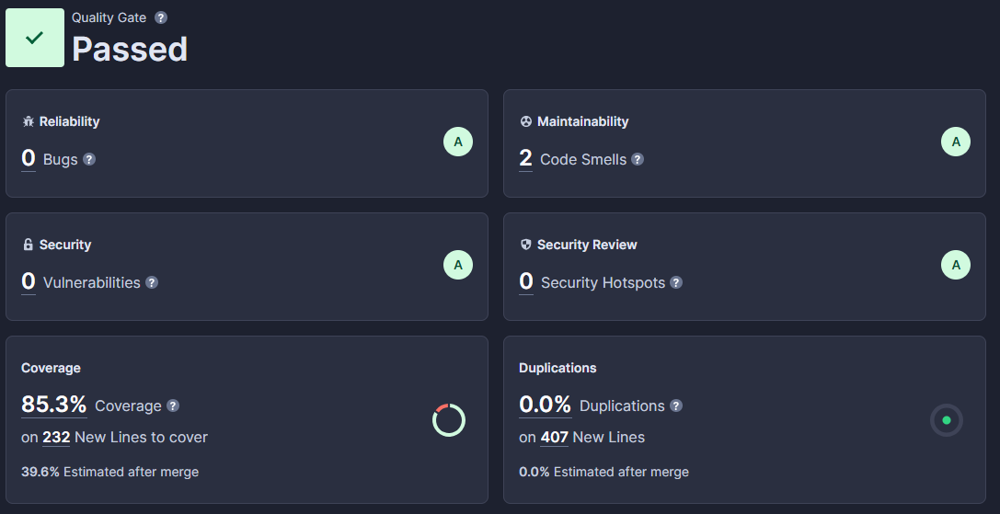

HMI webapp
HMI webapp developed for B2B customers in the logistics sector.


My Contribution
I worked on:
- Backend: Python, SQL, PostgreSQL (timescaledb), Redis
- Frontend: React, javascript (typescript)
Statistics module
I developed the new frontend and optimized the backend, which resulted in a reduced load time of statistics module by ~93%, utilizing various optimization techniques for data aggregation in the database and data processing in Python, which enabled the team to assist customers faster.
- It can handle databases with tables of 500 million rows while maintaining low response times.
- Used optimization techniques to make faster response times, such as aggregating data in the database with time buckets and more pyth


API - FastAPI (TODO: Add picture of localhost:8000/docs)

- I created new API endpoints to handle business logic, ensuring a >80% coverage by unit tests to avoid regressions.
- Used industry standards such as pydantic and FastAPI.
Initiatives I led to improve CICD processes (Long term thinking)
- Proposed and implemented improved coding standards and managed a quality gate which resulted in improving new code and increased the code coverage of the backend from 5% to over 50% in a period of 1,5 years.
- Detected that some microservices were tightly coupled so I proposed an architectural change that simplified the codebase and adapted it to my team's needs, which also reduced docker image sizes by -72.5% (measured in production for the backend)
- Reduced build time from 4min15 to 1min42 (-60%) by optimizing Dockerfiles and introducing multi stage builds.

